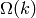
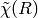
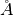

| Larch: X-ray Data Analysis |
Fitting XAFS data with structural models based on Feff calculations is a primary motivation for Larch. In this section, we describe how to set up a fitting model to fit a set of FEFF calculations to XAFS data. Many parts of the documentation so far have touched on important aspects of this process, and those sections will be referenced here.
The basic approach is to create a model EXAFS  as a sum of
scattering paths that will be compared to experimentally derived
. The model will be parameterized in terms of Larch
Parameters defined by _math.param(). A fit, using the same fitting
infrastructure as to _math.minimize() will be used to refine the
values of the variable parameters in the model. To be clear, the Path
Parameters for all Feff Paths in the fits should be written in terms of
variable parameters help in a single parameter group. The refinement will
be done by comparing the model and experimental after a
Transformation based on the Fourier transforms in XAFS: Fourier Transforms for XAFS.
as a sum of
scattering paths that will be compared to experimentally derived
. The model will be parameterized in terms of Larch
Parameters defined by _math.param(). A fit, using the same fitting
infrastructure as to _math.minimize() will be used to refine the
values of the variable parameters in the model. To be clear, the Path
Parameters for all Feff Paths in the fits should be written in terms of
variable parameters help in a single parameter group. The refinement will
be done by comparing the model and experimental after a
Transformation based on the Fourier transforms in XAFS: Fourier Transforms for XAFS.
The function feffit() is the principle function to do the fit of a
set of Feff paths to XAFS spectra. This essentially runs
_math.minimize() with a parameter group, but with a built-in
objective function to calculate the fit residual. This built-in objective
function calculates the residual as the difference of model and
experimental for a list of Datasets. Here, a Feffit
Dataset is an important concept that will allow us to easily extend
modeling to multiple data sets.
A Feffit Dataset has three principle components. First, it has an
experimental data, . Second, it has a list of Feff paths –
ff2chi() will be used to calculate the model . Third,
it has a Feffit Transform group which holds the Fourier transform and
fitting ranges to select how the data and model are to be compared. In
addition, a fit has a single parameter group, holding all the variable and
constrained parameters used by all the paths and data sets in a fit.
There are then 3 principle functions for setting up and executing feffit():
- feffit_transform() is used to create a Transform group, which holds the set of Fourier transform parameters.
- feffit_dataset() is used to create a Dataset group, which consists of the three components described above:
- a group holding experimental data (k and chi).
- a list of Feff paths.
- a Transform group.
- Finally, feffit() is run with a parameter group containing the variable and constrained Parameters for the fit, and a dataset or list of datasets groups.
create and return Feffit Transform group to be used in a Feffit dataset.
| Parameters: |
|
|---|---|
| Returns: | a Feffit Transform group |
The parameters stored in the returned group object will be used to control how the fit is performed.
create a Feffit Dataset group.
| Parameters: |
|
|---|---|
| Returns: | a Feffit Dataset group. |
A Dataset group is pretty simple, initially consisting of data, a pathlist, and a transform, though each of these can be complex.
The value for data must be a group containing arrays k and
chi (as determined _xafs.autobk() or some other procedure).
If it contains a value (scalar or array) epsilon_k, that will be
used as the uncertainty in for weighting the fit.
Otherwise, the uncertainty in will be estimated
automatically. The pathlist is a list of Feff Paths, each of which
can have its Path Parameters written in terms of fit parameters (see
the final example in the previous section). This list of paths will be
sent to ff2chi() to caclulate the model  to compare
to the experimental data. Finally, transform is a Feffit transform
group, as defined above.
to compare
to the experimental data. Finally, transform is a Feffit transform
group, as defined above.
execute a Feffit fit.
| Parameters: |
|
|---|---|
| Returns: | a fit results group. |
The paramgroup is a group containing all fitting parameters for the model. The datasets argument can be either a single Feffit Dataset as created by feffit_dataset() or a list of them. If path_outputs==True, all Feff Paths in the fit will be separately Fourier transformed.
When the fit is completed, the returned value will be a group containing three objects:
- datasets: an array of FeffitDataSet groups used in the fit.
- params: This will be identical to the input parameter group.
- fit: an object which points to the low-level fit.
In addition, the output statistics listed below in Table of Feffit Output Statistics. will be written the paramgroup group. Since each varied and constrained parameter will also have best-values and estimated uncertainties, this allows the parameter group to be considered the principle group for a particular fit – it holds the variable parameters and statistical results needed to compare two fits.
On output, a new sub-group called model will be created for each Feffit Dataset. This will parallel the data group, in the sense that it will have output arrays listed in the Table of Feffit Output Arrays.
If path_outputs==True, all Feff Paths in the fit will be separately Fourier transformed., with the result being put in the corresponding FeffPath group.
A final note on the outputs of feffit(): the param sub-group in the output is truly identical to the input paramgroup. It is not a copy but points to the same group of values (see Object identities, copying, and equality vs. identity).
Table of Feffit Output Statistics. These values will be written to the paramgroup group. Listed here are the group component name and a description of its content. Many of these are described in more detail in Fit Results and Outputss
component name description chi_reduced reduced chi-square statistic. chi_square chi-square statistic. covar covariance matrix. covar_vars list of variable names for rows and colums of covariance matrix. errorbars Flag whether error bars could be calculated. fit_details group with additional fit details. message output message from fit. nfree number of degrees of freedom in fit. nvarys number of variables in fit.
Table of Feffit Output Arrays. The following arrays will be written into the data and model sub-group for each dataset. The arrays will be created using the Path Parameters used in the most recent fit and the Feffit Transform group. Many of these arrays have names following the conventions for xftf() in section on Fourier Transforms for XAFS.
array name description k wavenumber array of .
chi kwin window  (length of input chi(k)). r uniform array of , out to rmax_out.
chir complex array of . chir_mag magnitude of . chir_pha phase of . chir_re real part of of . chir_im imaginary part of .
We start with a fairly minimal example, fitting spectra read from a data file with a single Feff Path.
## examples/feffit/doc_feffit1.lar
# read data
cu_data = read_ascii('cu.chi', labels='k, chi')
# define fitting parameter group
pars = group(amp = param(1, vary=True),
del_e0 = guess(0.1),
sig2 = param(0.002, vary=True),
del_r = guess(0.) )
# define a Feff Path, give expressions for Path Parameters
path1 = feffpath('feffcu01.dat',
s02 = 'amp',
e0 = 'del_e0',
sigma2 = 'sig2',
deltar = 'del_r')
# set tranform / fit ranges
trans = feffit_transform(kmin=3, kmax=17, kw=2, dk=4, window='kaiser', rmin=1.4, rmax=3.0)
# define dataset to include data, pathlist, transform
dset = feffit_dataset(data=cu_data, pathlist=[path1], transform=trans)
# perform fit!
out = feffit(pars, dset)
print feffit_report(out)
plot(dset.data.k, dset.data.chi *dset.data.k**2, new=True,
xlabel=r'$k \rm\,(\AA^{-1})$', label='data',
ylabel=r'$k^2\chi(k) \rm\,(\AA^{-2})$',
title='First shell fit to Cu', show_legend=True)
plot(dset.model.k, dset.model.chi*dset.model.k**2, label='fit')
plot(dset.data.r, dset.data.chir_mag, new=True, xmax=8, win=2,
xlabel=r'$R \rm\,(\AA)$', label='data',
ylabel=r'$|\chi(R)| \rm\,(\AA^{-3})$',
title='First shell fit to Cu', show_legend=True)
plot(dset.model.r, dset.model.chir_mag, label='fit', win=2)
## end examples/feffit/doc_feffit1.lar
This simply follows the essential steps:
1. A group of parameters pars is defined. Note that you can include upper and/or lower bounds and mix the use of _math.guess() and _math.param().
2. A Feff Path is defined with feffpath(), as discussed in the previous section. Here we assign each of the Path Parameters to the name of one of the fitting parameters. More complex expressions and relations can be used, but for this example, we’re keeping it simple.
3. A Feffit Transform is created with feffit_transform(), which essentially sets the Fourier transform parameters and fit ranges.
4. A Feffit Dataset is created with feffit_dataset(). To begin the fit, this includes a data group, a transform group, and a pathlist, which is a list of FeffPaths.
5. The fit is run with feffit(), and the output group is saved. This output group is used by feffit_report() to generate a fit report (shown below).
6. Plots are made from the dataset, using rather long-winded plot() commands.
running this example prints out the following report:
=================== FEFFIT RESULTS ====================
[[Statistics]]
npts, nvarys = 106, 4
nfree, nfcn_calls = 102, 31
chi_square = 5067.945057
reduced chi_square = 49.685736
[[Data]]
n_independent = 14.260
eps_k, eps_r = 0.000180, 0.008540
fit space = r
r-range = 1.400, 3.000
k-range = 3.000, 17.000
k window, dk = kaiser, 4.000
k-weight = 2
paths used in fit = ['feffcu01.dat']
[[Variables]]
amp = 0.934846 +/- 0.097346 (init= 1.000000)
del_e0 = 3.861892 +/- 1.269075 (init= 0.100000)
del_r = -0.006031 +/- 0.006476 (init= 0.000000)
sig2 = 0.008698 +/- 0.000762 (init= 0.002000)
[[Correlations]] (unreported correlations are < 0.100)
amp, sig2 = 0.928
del_e0, del_r = 0.920
del_r, sig2 = 0.159
amp, del_r = 0.138
[[Paths]]
feff.dat file = feffcu01.dat
Atom x y z ipot
Cu 0.0000, 0.0000, 0.0000 0 (absorber)
Cu 0.0000, -1.8016, 1.8016 1
reff = 2.54780
Degen = 12.00000
S02 = 0.93485 +/- 0.09735
E0 = 3.86189 +/- 1.26908
R = 2.54177 +/- 0.00648
deltar = -0.00603 +/- 0.00648
sigma2 = 0.00870 +/- 0.00076
=======================================================
and generates the plots shown below
This is a pretty good fit to the first shell of Cu metal, and shows the basic mechanics of fitting XAFS data to Feff Paths. There are several things that might be added to this for modeling more complex XAFS data, including adding more paths to a fit, including multiple-scattering paths, simultaneously modeling more than one data set, and building more complex fitting models. We’ll get to these in the following examples.
But first, a small detour. The plotting commands in the above example for
plotting and  for data and model will be
useful for the other examples as well, so we’ll create a slightly
generalized function to make such plots and put this and several other
plotting functions into a separate file, doc_macros.lar. This will look
like this:
for data and model will be
useful for the other examples as well, so we’ll create a slightly
generalized function to make such plots and put this and several other
plotting functions into a separate file, doc_macros.lar. This will look
like this:
## examples/feffit/doc_macros.lar
## general purpose macros, mostly for showing XAFS data
##
label_k = r'$k \rm\,(\AA^{-1})$'
label_r = r'$R \rm\,(\AA)$'
label_chikw = r'$k^2\chi(k) \rm\,(\AA^{-%i})$'
label_chir = r'$|\chi(R)| \rm\,(\AA^{-%i})$'
label_chirre = r'${\rm Re}[\chi(R)] \rm\,(\AA^{-%i})$'
label_chirim = r'${\rm Im}[\chi(R)] \rm\,(\AA^{-%i})$'
label_chirpha = r'${\rm Phase}[\chi(R)] \rm\,(\AA^{-%i})$'
def plot_chifit(dataset, kweight=2, rmax=8, title='Data and Best-Fit', show_legend=True):
"""show chi(k) and chi(r) data and best-fit for a dataset"""
# make k-weighted chi(k)
kw = int(kweight)
data_chi_kw = dataset.data.chi * dataset.data.k**kw
model_chi_kw = dataset.model.chi * dataset.model.k**kw
# show k-weighted chi(k) in plot window 1
newplot(dataset.data.k, data_chi_kw, title=title,
xlabel=label_k, ylabel=label_chikw % kw,
show_legend=show_legend, color='blue', label='data', win=1)
plot(dataset.model.k, model_chi_kw, color='red', label='fit', win=1)
# show chi(R) in plot window 2
newplot(dataset.data.r, dataset.data.chir_mag, xmax=rmax, title=title,
xlabel=label_r, ylabel=label_chir % (kw+1),
show_legend=show_legend, color='blue', label='data', win=2)
plot(dataset.model.r, dataset.model.chir_mag, color='red', label='fit', win=2)
plot(dataset.model.r, dataset.data.chir_re, color='blue', label='', win=2)
plot(dataset.model.r, dataset.model.chir_re, color='red', label='', win=2)
enddef
def plot_path_k(dataset, ipath, kweight=None, offset=0, label=None, **extra):
"plot k-weighted chi(k) for a particular path in a dataset"
path = dataset.pathlist[ipath]
if label is None:
label = 'path %i' % (ipath)
endif
if kweight is None:
kweight = dataset.transform.kweight
endif
kw = int(kweight)
chi_kw = offset + path.chi * path.k**kw
plot(path.k, chi_kw, label=label,
xlabel=label_k, ylabel=label_chikw % kw, **extra)
enddef
def plot_path_r(dataset, ipath, comp='mag', offset=0, label=None, **extra):
"plot chi(r) for a particular path in a dataset"
path = dataset.pathlist[ipath]
if label is None:
label = 'path %i' % (ipath)
endif
kw = int(dataset.transform.kweight)
if comp == 're':
chir= path.chir_re
ylabel = label_chirre % kw
elif comp == 'im':
chir= path.chir_im
ylabel = label_chirim % kw
elif comp == 'phase':
chir= path.chir_pha
ylabel = label_chirpha % kw
else:
chir = path.chir_mag
ylabel = label_chir % kw
endif
chir = offset + chir
plot(path.r, chir, label=label, xlabel=label_r, ylabel=ylabel, **extra)
enddef
def plot_modelpaths_k(dataset, kweight=None, offset=-1, title='Model and Paths', **extra):
"""show chi(k) for sum and individual paths"""
# make k-weighted chi(k)
if kweight is None:
kweight = dataset.transform.kweight
endif
kw = int(kweight)
model = dataset.model
model_chi_kw = model.chi * model.k**kw
newplot(model.k, model_chi_kw, title=title,
xlabel=label_r, ylabel=label_chikw % kw,
color='blue', label='sum', win=1, **extra)
for ipath in range(len(dataset.pathlist)):
plot_path_k(dataset, ipath, kweight=kw, offset=(ipath+1)*offset)
endfor
enddef
def plot_modelpaths_r(dataset, comp='mag', offset=-0.5, title='Model and Paths', **extra):
"""show chi(r) for sum and individual paths"""
# make k-weighted chi(k)
kw = int(dataset.transform.kweight)
model = dataset.model
if comp == 're':
chir= model.chir_re
ylabel = label_chirre % kw
elif comp == 'im':
chir= model.chir_im
ylabel = label_chirim % kw
elif comp == 'phase':
chir= model.chir_pha
ylabel = label_chirpha % kw
else:
chir = model.chir_mag
ylabel = label_chir % kw
endif
newplot(model.r, chir, label='sum', xlabel=label_r, ylabel=ylabel, title=title, **extra)
for ipath in range(len(dataset.pathlist)):
plot_path_r(dataset, ipath, comp=comp, offset=(ipath+1)*offset)
endfor
enddef
## end of examples/feffit/doc_macros.lar
This defines several new plotting functions plot_chifit(), plot_path_k(), and plot_path_r(), and so on which we’ll find useful in later examples. Using the first of these, we can then replace the plot commands in the script above with:
run('doc_macros.lar')
plot_chifit(dset, title='First shell fit to Cu')
and get reproducible plots without having to copy and paste the same code fragment everywhere. We’ll use this in the examples below.
We’ll continue with the Cu data set, and add more paths to model further shells. This is fairly straightforward, but in the interest of space, we’ll limit the example here to 3 paths to model the first two shells of copper. This is a small step, but highlights a main concern with XAFS analysis that we need to address. This is the fact that there simply is not enough freedom in the XAFS signal to measure all the possible adjustable Path Parameters independently. Thus we need to be able to apply constraints to the Path Parameters.
Here, we use two of the most common types of constraints. First, we apply
the same amplitude reduction factor and the same  shift to all
Paths. These may seem obvious for this example, but for more complicated
examples, either including shells of mixed species or Feff Paths generated
from different calculation, these become less obvious.
shift to all
Paths. These may seem obvious for this example, but for more complicated
examples, either including shells of mixed species or Feff Paths generated
from different calculation, these become less obvious.
Second, we introduce a scale the change in distance by a singple expansion
factor  (alpha in the script), and using the builtin
value of half-path distance, reff, and setting deltar =
'alpha*reff' for all Paths. During the calculation of
for each path that happens in the fitting process, the value of reff
will be updated to the correct value for each path. Thus, as the value of
alpha varies in the fit, each path will use its proper value for
reff, so that each deltar will be different but not independent.
This ensures that all the path lengths change in a manner consistent with
one another.
(alpha in the script), and using the builtin
value of half-path distance, reff, and setting deltar =
'alpha*reff' for all Paths. During the calculation of
for each path that happens in the fitting process, the value of reff
will be updated to the correct value for each path. Thus, as the value of
alpha varies in the fit, each path will use its proper value for
reff, so that each deltar will be different but not independent.
This ensures that all the path lengths change in a manner consistent with
one another.
## examples/feffit/doc_feffit2.lar
# read data
cu_data = read_ascii('cu.chi', labels='k, chi')
# define fitting parameter group
pars = group(amp = param(1, vary=True),
del_e0 = guess(0.1),
sig2_1 = param(.002, vary=True),
sig2_2 = param(.002, vary=True),
sig2_3 = param(.002, vary=True),
alpha = guess(0) )
# define 3 Feff Path, give expressions for Path Parameters
path1 = feffpath('feff0001.dat', s02 = 'amp', e0 = 'del_e0',
sigma2 = 'sig2_1', deltar = 'alpha*reff')
path2 = feffpath('feff0002.dat', s02 = 'amp', e0 = 'del_e0',
sigma2 = 'sig2_2', deltar = 'alpha*reff')
path3 = feffpath('feff0003.dat', s02 = 'amp', e0 = 'del_e0',
sigma2 = 'sig2_3', deltar = 'alpha*reff')
trans = feffit_transform(kmin=3, kmax=17, kw=2, dk=4, window='kaiser', rmin=1.4, rmax=3.4)
# define dataset to include data, pathlist, transform
dset = feffit_dataset(data=cu_data, pathlist=[path1, path2, path3], transform=trans)
# perform fit!
out = feffit(pars, dset)
report = feffit_report(out)
print report
run('doc_macros.lar')
plot_chifit(dset, title='Three-shell fit to Cu', rmax=5)
# ## end examples/feffit/doc_feffit2.lar
Here we simply create path2 and path3 using nearly the same parameters
as for path1. Compared to the previous example, the other changess
are that the range for the fit has been increased so that the
fit will try to fit the second shell, and that sigma2 is allowed to
vary independently for each path.
The output for this fit is a bit longer, being:
=================== FEFFIT RESULTS ====================
[[Statistics]]
npts, nvarys = 132, 6
nfree, nfcn_calls = 126, 50
chi_square = 4312.647261
reduced chi_square = 34.227359
[[Data]]
n_independent = 17.825
eps_k, eps_r = 0.000180, 0.008540
fit space = r
r-range = 1.400, 3.400
k-range = 3.000, 17.000
k window, dk = kaiser, 4.000
k-weight = 2
paths used in fit = ['feff0001.dat', 'feff0002.dat', 'feff0003.dat']
[[Variables]]
alpha = -0.002436 +/- 0.001754 (init= 0.000000)
amp = 0.931861 +/- 0.067134 (init= 1.000000)
del_e0 = 3.855156 +/- 0.871283 (init= 0.100000)
sig2_1 = 0.008663 +/- 0.000527 (init= 0.002000)
sig2_2 = 0.013728 +/- 0.002425 (init= 0.002000)
sig2_3 = 0.008167 +/- 0.006718 (init= 0.002000)
[[Correlations]] (unreported correlations are < 0.100)
amp, sig2_1 = 0.930
alpha, del_e0 = 0.922
amp, sig2_3 = 0.249
sig2_1, sig2_3 = 0.247
amp, sig2_2 = 0.241
sig2_1, sig2_2 = 0.225
alpha, sig2_1 = 0.181
del_e0, sig2_3 = 0.162
alpha, amp = 0.161
alpha, sig2_3 = 0.146
del_e0, sig2_2 = -0.123
[[Paths]]
feff.dat file = feff0001.dat
Atom x y z ipot
Cu 0.0000, 0.0000, 0.0000 0 (absorber)
Cu 0.0000, -1.8016, 1.8016 1
reff = 2.54780
Degen = 12.00000
S02 = 0.93186 +/- 0.06713
E0 = 3.85516 +/- 0.87128
R = 2.54159 +/- 0.00447
deltar = -0.00621 +/- 0.00447
sigma2 = 0.00866 +/- 0.00053
feff.dat file = feff0002.dat
Atom x y z ipot
Cu 0.0000, 0.0000, 0.0000 0 (absorber)
Cu -3.6032, 0.0000, 0.0000 1
reff = 3.60320
Degen = 6.00000
S02 = 0.93186 +/- 0.06713
E0 = 3.85516 +/- 0.87128
R = 3.59442 +/- 0.00632
deltar = -0.00878 +/- 0.00632
sigma2 = 0.01373 +/- 0.00243
feff.dat file = feff0003.dat
Atom x y z ipot
Cu 0.0000, 0.0000, 0.0000 0 (absorber)
Cu 1.8016, -1.8016, 0.0000 1
Cu 1.8016, 0.0000, -1.8016 1
reff = 3.82180
Degen = 48.00000
S02 = 0.93186 +/- 0.06713
E0 = 3.85516 +/- 0.87128
R = 3.81249 +/- 0.00670
deltar = -0.00931 +/- 0.00670
sigma2 = 0.00817 +/- 0.00672
=======================================================
With plots of data and fits as shown below.


Figure 13. Results for Feffit for a 3-shell fit to a spectrum from Cu metal, constraining all path distances to expand with a single variable.
Here, we show both the magnitude and real part of . The fit
to the real part shows excellent agreement over the fit range of
[1.4, 3.4] . It is often useful the contributions from the
indvidual paths. With the macros defined above, this is pretty
straightforward, as we can just do:
plot_modelpaths_k(dset, offset=-1)
plot_modelpaths_r(dset, comp='re', offset=-1, xmax=6)
to generate the following plots of the contributions of the differnt paths:


Figure 14. Path contributions to full mode for the 3-shell fit to Cu spectrum.
We’ll extend the above example by adding two more data sets. This highlights another key concept in modeling XAFS data and reducing the number of freely varying parameters in a fit.
{kind=link}
{kind=link}